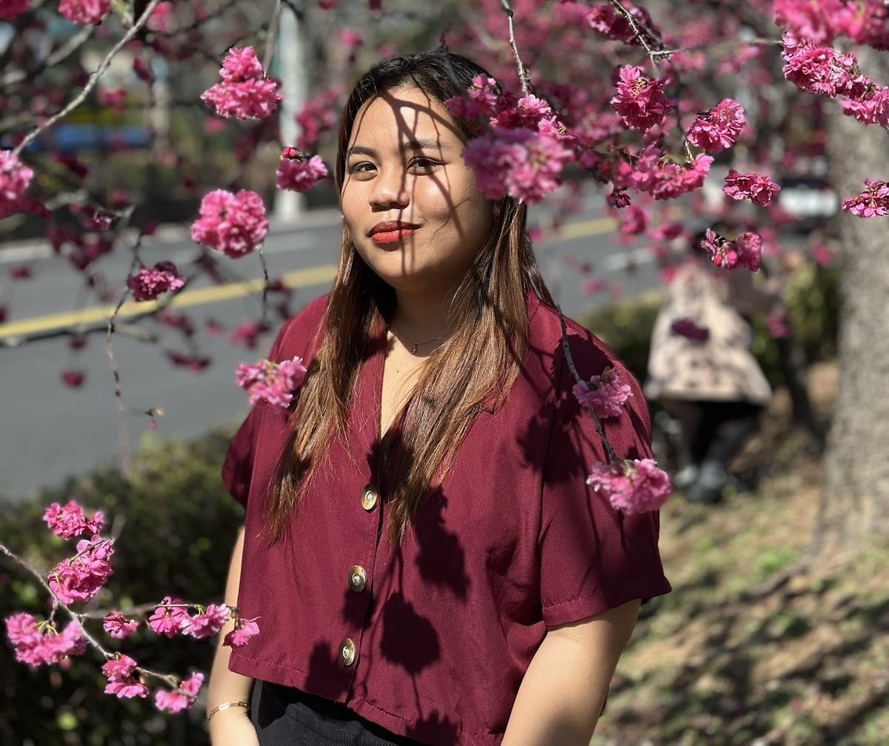

FET · Foreign English Teacher
Rochelle Pangan Sansano
From the Philippines 🇵🇭 · Tai-He Elementary
For eight years, Teacher Rochelle taught English in the Philippines. Today she stands in front of Tai-He's classes — running our Bilingual Initiative, leading English Assembly and Cultural Exchange, and (in her own words) "fostering a love for English in young minds."
Rochelle 老師在菲律賓累積八年教學經驗，現在每天和泰和的孩子一起上課。她負責雙語推動、英語朝會、跨文化交流——讓泰和的英文課，不只是課本上的英文。
Visit Teacher Rochelle's site
↗